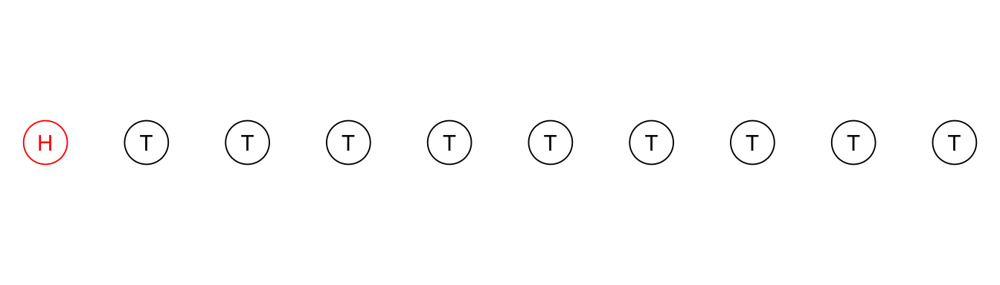

Show the code
library(pander) # nice tables
library(tibble) # data frames
library(ggplot2) # beautiful graphsPrior With 3 Values; Data on Coin Flips; Likelihood and Posterior
Bayes Theorem allows us to state our prior beliefs, to calculate the likelihood of our data given those beliefs, and then to update those beliefs with data, thus arriving at a set of posterior beliefs. However, Bayesian calculations can be difficult to understand. This document attempts to provide a simple walkthrough of some Bayesian calculations.
library(pander) # nice tables
library(tibble) # data frames
library(ggplot2) # beautiful graphsMathematically Bayes Theorem is as follows:
\[P(H|D) = \frac{P(D|H)P(H)}{P(D)}\]
In words, Bayes Theorem may be written as follows:
\[posterior = \frac{likelihood * prior}{data}\]
Our posterior beliefs are proportional to our prior beliefs, multiplied by the likelihood of those beliefs, given the data.
In this example, we provide an example of using Bayes Theorem to examine our conclusions about the proportion of heads when a coin is flipped 10 times.
Conventionally, we call this proportion that we are trying to estimate \(\theta\).
For the sake of simplicity, this example uses a relatively simple set of prior beliefs about 3 possible values for the proportion \(\theta\).
R code in this example is adapted and simplified from Kruschke (2011), p. 70
We set a simple set of prior beliefs, concerning 3 values of \(\theta\), the proportion of heads.
theta1 <- c(0.25, 0.50, 0.75) # candidate parameter values
ptheta1 <- c(.25, .50, .25) # prior probabilities
ptheta1 <- ptheta1/sum(ptheta1) # normalizeOur values of \(\theta\) are 0.25, 0.5 and 0.75, with probabilities \(P(\theta)\) of 0.25, 0.5 and 0.25.
ggplot(data = NULL,
aes(x = theta1,
y = ptheta1)) +
geom_bar(stat = "identity",
fill = "#FFBB00") +
labs(title = "Prior Probabilities") +
theme_minimal()myBayesianEstimates <- tibble(theta1, ptheta1) # data frame
pander(myBayesianEstimates) # nice table| theta1 | ptheta1 |
|---|---|
| 0.25 | 0.25 |
| 0.5 | 0.5 |
| 0.75 | 0.25 |
10 coin flips. 1 Heads. 9 Tails.
data1 <- c(1, 0, 0, 0, 0, 0, 0, 0, 0, 0) # the data
data1_factor <- factor(data1,
levels = c(0, 1),
labels = c("T", "H"))n_heads <- sum(data1 == 1) # number of heads
n_tails <- sum(data1 == 0) # number of tailsx <- seq(1, 10) # x goes from 1 to 10
y <- rep(1, 10) # y is a sequence of 10 1's
coindata <- data.frame(x, y, data1_factor) # data for visualization
ggplot(coindata,
aes(x = x,
y = y,
label = data1_factor,
color = data1_factor)) +
geom_point(size = 10, shape = 1, pch=19) +
geom_text() +
labs(x = "",
y = "") +
scale_color_manual(values = c("black", "red")) +
theme_void() +
theme(legend.position = "none")Warning: Duplicated aesthetics after name standardisation: shape
The likelihood is the probability that a given value of \(\theta\) would produce this number of heads.
The probability of multiple independent events \(A\), \(B\), \(C\), etc. is \(P(A,B,C, ...) = P(A) * P(B) * P(C) * ...\).
Therefore, in this case, the likelihood is proportional to \([P(heads)]^{\text{number of heads}}\) and multiply this by \([P(tails)]^{\text{number of tails}}\).
Thus:
\[\mathcal{L}(\theta) \propto \theta^{\text{number of heads}} * (1-\theta)^{\text{number of tails}}\]
likelihood1 <- theta1^n_heads * (1 - theta1)^n_tails # likelihoodggplot(data = NULL,
aes(x = theta1,
y = likelihood1)) +
geom_bar(stat = "identity",
fill = "#375E97") +
labs(title = "Likelihood") +
theme_minimal()At this point our estimates include not only a value of \(\theta\) and \(P(\theta)\), but also the likelihood, \(\mathcal{L}(\theta)\).
myBayesianEstimates <- tibble(theta1, ptheta1, likelihood1)
pander(myBayesianEstimates) # nice table| theta1 | ptheta1 | likelihood1 |
|---|---|---|
| 0.25 | 0.25 | 0.01877 |
| 0.5 | 0.5 | 0.0009766 |
| 0.75 | 0.25 | 2.861e-06 |
We then calculate the denominator of Bayes theorem:
\[\Sigma [\mathcal{L}(\theta) * P(\theta)]\]
pdata1 <- sum(likelihood1 * ptheta1) # normalizeWe then use Bayes Rule to calculate the posterior:
\[P(H|D) = \frac{P(D|H)P(H)}{P(D)}\]
posterior1 <- likelihood1 * ptheta1 / pdata1 # Bayes Ruleggplot(data = NULL,
aes(x = theta1,
y = posterior1)) +
geom_bar(stat = "identity",
fill = "#3F681C") +
labs(title = "Posterior") +
theme_minimal()Our estimates now include \(\theta\), \(P(\theta)\), \(\mathcal{L}(\theta)\) and \(P(\theta | D)\).
myBayesianEstimates <- tibble(theta1, ptheta1, likelihood1, posterior1)
pander(myBayesianEstimates) # nice table| theta1 | ptheta1 | likelihood1 | posterior1 |
|---|---|---|---|
| 0.25 | 0.25 | 0.01877 | 0.9056 |
| 0.5 | 0.5 | 0.0009766 | 0.09423 |
| 0.75 | 0.25 | 2.861e-06 | 0.000138 |
Prepared by Andy Grogan-Kaylor agrogan@umich.edu, https://agrogan1.github.io/.
Questions, comments and corrections are most welcome.